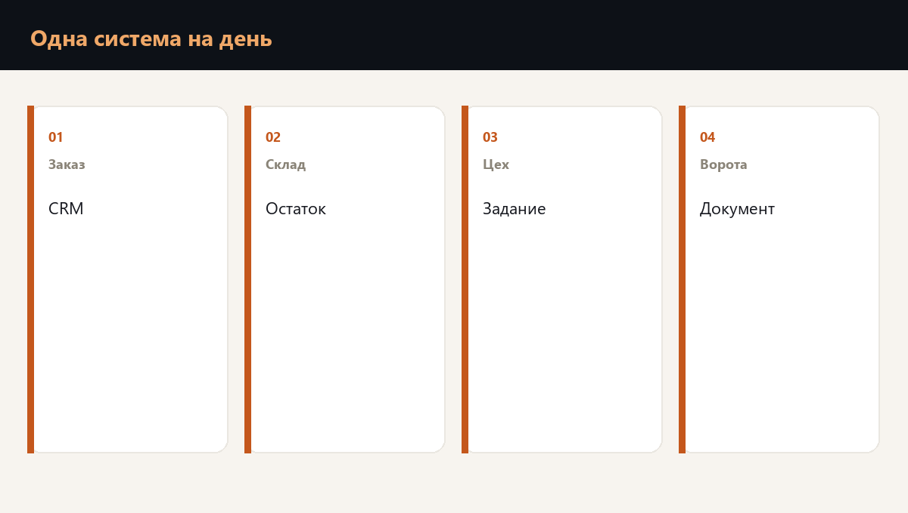

Шифровальщик редко останавливает станок. Он закрывает систему, в которой компания видит, кому везти, что везти и можно ли это отпустить со склада.
Пока эта картина одна, день отгрузки один. Заказ в CRM, остаток и производство в ERP, заявка перевозчику и подпись на отгрузке живут в одном контуре. Закрылся контур, и логистика не знает, какую машину грузить. В опубликованном логистическом разборе день без возможности работать вышел около 180 тысяч рублей. Здесь та же цена, только дверь закрывает не ворота, а база.

Где система держит весь день отгрузки
Утром кладовщик открывает остаток. Производство смотрит заказ. Логист печатает документ, без которого машина не уезжает. Продавец в CRM видит, что пообещали клиенту. Если все эти взгляды идут в одну систему, у дня одна дверь.
Упаковка, которую отгружают вместе с товаром, часто тоже числится только там. Нет строки в системе, нет коробки в накладной, нет отгрузки. Это и есть единая точка отказа, только не на дворе, а в учете.
Что нельзя купить за день, а что можно вести руками
Ходовой товар, который люди на складе узнают без базы, иногда можно отгрузить по бумажной ведомости, выгруженной заранее. Уникальный заказ под контракт, где цену, комплект и адрес знает только CRM, руками не восстановить. Его и готовят: копия, выгрузка и человек, который имеет право отпустить машину без системы.
- Можно вести вторым способом. Ходовой товар, известный складу, если ведомость уже выгружена и лежит отдельно от базы.
- Нельзя купить за день. История заказа, комплект под контракт, право подписи на отгрузку, если они есть только в системе.
- Логистика. Заявка перевозчику, которая живет в той же базе, встает вместе с ней. Контакт перевозчика и правило, кого грузить первым, должны быть на бумаге.
Где эту цепочку смотрят на вашей компании
Проверка готовности к шифровальщику проходит день отгрузки по шагам и показывает, какой шаг живет только в одной системе, сколько стоит день без нее и какой шаг компания реально ведет иначе.
Копия базы это первый, технический шаг. Второй шаг принадлежит собственнику: какой заказ еще можно обещать и кто имеет право отпустить машину, пока система закрыта.
Частые вопросы
Потому что заказчик получает не строку в базе, а машину. Если заказ, остаток и документ на отгрузку не живут по отдельности, закрытие любой из них останавливает машину.
Тот, который склад узнает без экрана и по которому ведомость уже лежит вне базы. Уникальный комплект под контракт так не отгружают.
Нет. Копия возвращает данные. Решение, какую долю дня еще обещать заказчику, принимает человек, которого назвали заранее.
Готова ли команда к первому часу кризиса
Планы проверяются не чтением, а сценарием. Диагностика покажет пробелы, корпоративный формат отрабатывает их с вашей командой на ваших процессах.